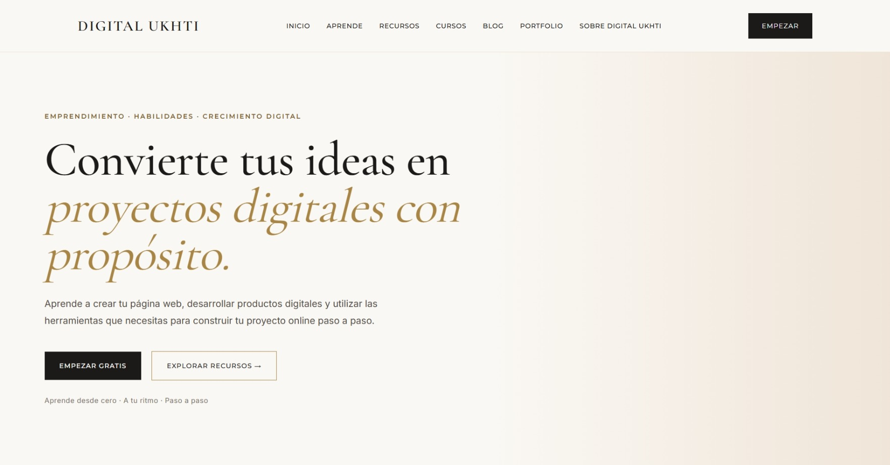

CASO DE ESTUDIO · 01
La Prun
Identidad visual y diseño web para una cafetería y tienda de productos locales con una estética cálida, natural y contemporánea.
EL PROYECTO
Construir una presencia digital clara y profesional.
LA PRUN nace como un concepto de cafetería y tienda
de productos locales, pensado para conectar tradición, cercanía
y una experiencia contemporánea.
El objetivo fue desarrollar una identidad visual cálida y reconocible,
acompañada de una presencia digital clara que reflejara el carácter
artesanal del proyecto y facilitara el contacto con sus clientes.
DIRECCIÓN VISUAL
Una identidad cálida, natural y cercana.
La dirección visual de La Prun se inspira en la naturaleza, los productos artesanales y la vida local, combinando tonos cálidos y elementos sencillos para transmitir cercanía, autenticidad y calidad.
IDENTIDAD
Marca
Desarrollo del concepto visual de Digital Ukhti y creación de una identidad pensada para medios digitales.
Paleta
Una combinación de tonos naturales y cálidos pensada para transmitir autenticidad, cercanía y el carácter artesanal de La Prun.
Tipografía
Una selección tipográfica sencilla y contemporánea que aporta personalidad a la marca y mantiene una lectura clara en todos los formatos.

SISTEMA VISUAL
Una paleta creada para una identidad elegante y digital.
#1C1A18
#FAF8F4
#E7D5C1
#A98545
DIGITAL UKHTI
Identidad · Estrategia · Diseño digitalTIPOGRAFÍA
Elegancia editorial + claridad digital.
Cormorant Garamond
Títulos · Frases destacadas · Elementos editoriales
Inter
Navegación · Textos · Botones · Contenido digital
DISEÑO WEB
Diseñada para presentar servicios de forma sencilla.
El sitio web se desarrolló con una estructura clara,
navegación sencilla y diseño responsive.
La prioridad fue que el visitante pudiera entender rápidamente
qué ofrece Digital Ukhti y acceder fácilmente a las diferentes
áreas de la marca.
EXPERIENCIA DIGITAL
Una experiencia pensada para ser clara en cada pantalla.
Navegación clara
Una estructura sencilla e intuitiva que permite encontrar rápidamente cada área del proyecto y acceder al contenido con pocos pasos.
Diseño responsive
Una experiencia optimizada para ordenador, tablet y móvil, manteniendo la legibilidad, la jerarquía visual y una navegación cómoda en cada pantalla.
Identidad coherente
Tipografía, colores, espacios y composición trabajan como un único sistema visual para mantener una imagen profesional y reconocible en todo el sitio.
DESARROLLO
Estructura
Desarrollo de una estructura semántica clara y preparada para futuras ampliaciones.
Diseño
Estilos personalizados y sistema visual coherente para escritorio y dispositivos móviles.
Adaptación
Diseño optimizado para una experiencia consistente desde ordenador, tablet y móvil.
RESULTADO
Una base digital preparada para seguir creciendo.
El resultado es una identidad coherente y una web sencilla, flexible y profesional, preparada para incorporar nuevos servicios, proyectos y contenidos.
Volver al portfolio